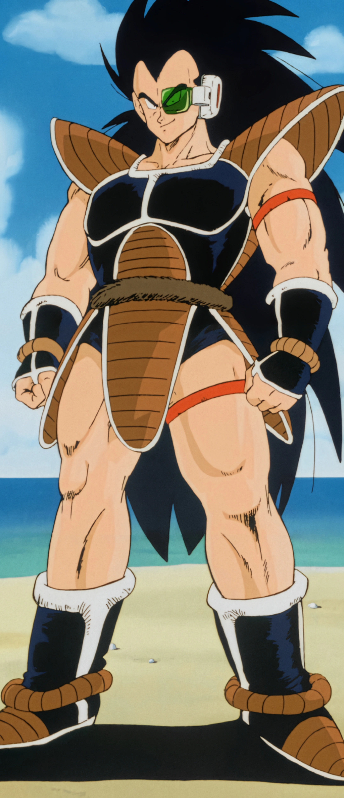
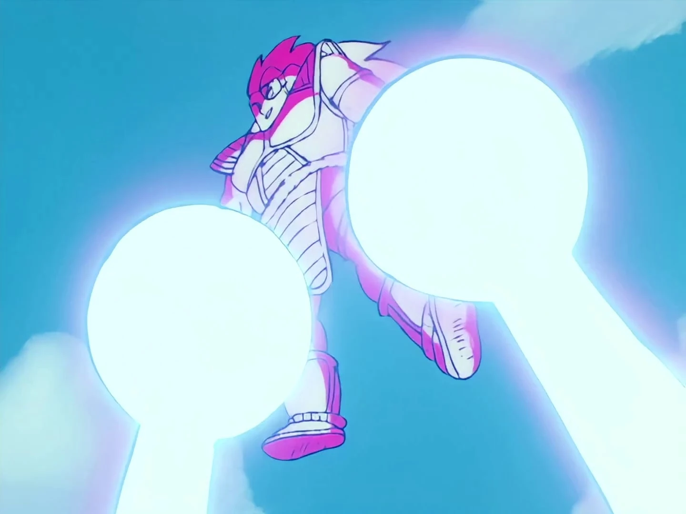
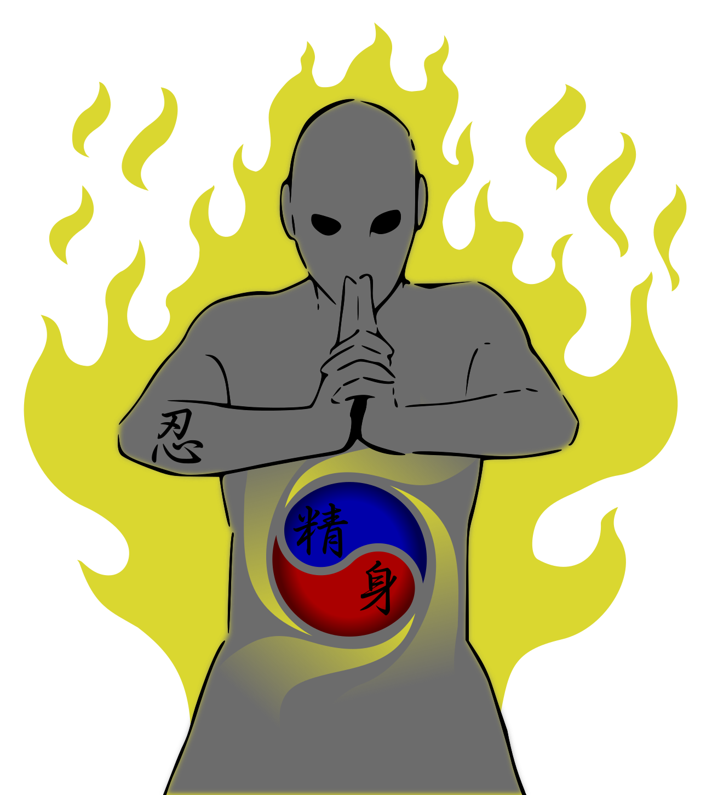
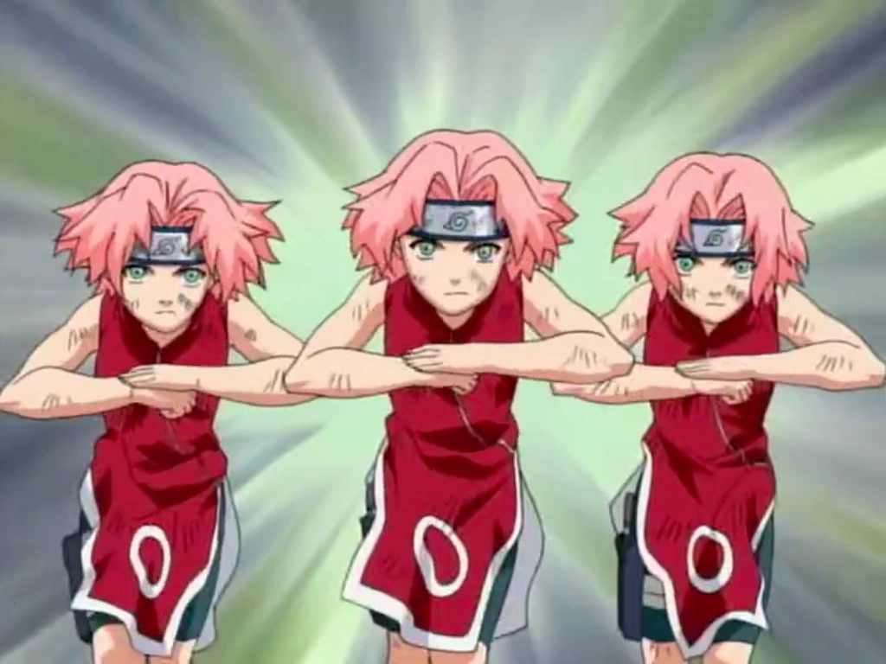
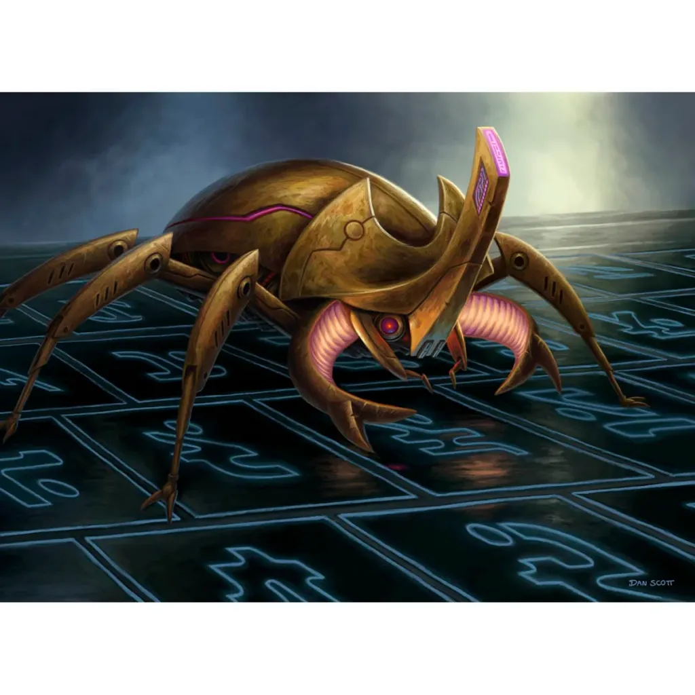

What's New?
What's New?
Here is the quick player-facing summary of the latest additions.
Jutsu
Jutsu are special cards that build up before they resolve. Ninjutsu is the Immutable card that lets you place one Jutsu face up beneath it as a Prepared Jutsu. Pay the Jutsu's non-Sign costs when you prepare it; it does not resolve yet, and you cannot prepare a second one until the first is finished.
Prepared Jutsu
A Prepared Jutsu stays beneath Ninjutsu while you work through its Signs. When the full sequence is complete, the Jutsu resolves without paying its costs again, then goes to your Discard.
Signs
Signs are completed in order, one at a time, whenever you play a non-Jutsu card. The card's type can also form one matching extra Sign when possible:
- Agent cards form Ram.
- Daemon cards form Ox.
- Pulse cards form Tiger.
- Glitch cards form Snake.
Starting a Jutsu counts as playing a card, but it does not form a Sign. See Ninjutsu in the New Cards section below for the card that starts this engine.
Breach
Breach X makes an Agent deal X damage during the opponent's End phase. Damage hits opposing Agents first; if there are no Agents left, it reduces Sync. Multiple Breaches resolve in the order their Agents are on the board.
Signature Cards
Signature cards cannot be included in a deck. A Signature provider creates its named Signature in your hand during your End phase, and you play that card normally. For example, Raditz, Invader supplies Double Sunday.
Combo Conditions
The Combo condition lets you choose several cards in a play order. Each card keeps its normal costs and restrictions. Cards that are unavailable are skipped unless you turn on the Cancel if card isn't played checkbox; with that box checked, the Combo stops at the first card that cannot be played.
When a card in the Combo is marked ∞ (all), the program keeps trying that card while another copy is available and playable, then continues to the next card in the list.
New Cards

Bandwidth 2 • Integrity 4 • Breach 1 • Signature: Double Sunday

Ki 1 • Signature
Deal 1 damage. Then deal 1 damage.

You may play a Jutsu as a Prepared Jutsu by paying its non-Sign costs and putting it beneath this card instead of resolving it. You can't have more than one Prepared Jutsu beneath this card at a time.

Signs — Ram, Ram
Create two Clone Agents, each with Integrity 1.
Bandwidth 2 • Signs — Tiger, Ox, Tiger
Deal 6 damage to your opponent.

Your opponent discards a card at random.